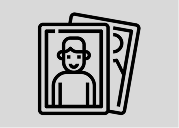
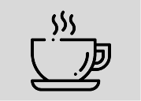

ensaio pessoal


Olá! Sou Rafael Almeida, apaixonado por registrar momentos únicos e
eternizar emoções através da fotografia. Desde que descobri esse
amor pela arte de fotografar, venho me dedicando a transformar
histórias em imagens que tocam o coração.
Meu trabalho é
focado em capturar a beleza da naturalidade como: sorrisos
espontâneos, olhares sinceros e gestos que falam por si.

Atuo em ensaios individuais, casamentos, eventos e projetos personalizados, sempre buscando entregar não apenas fotos, mas memórias que vão durar para sempre.Se você também valoriza o poder de uma imagem bem capturada, será um prazer fazer parte da sua história!

